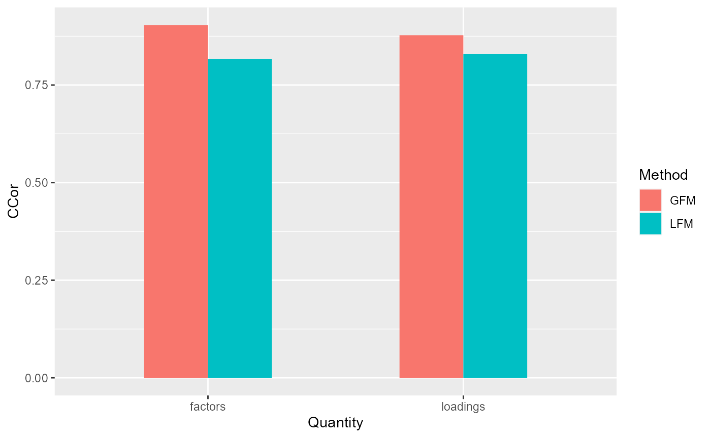
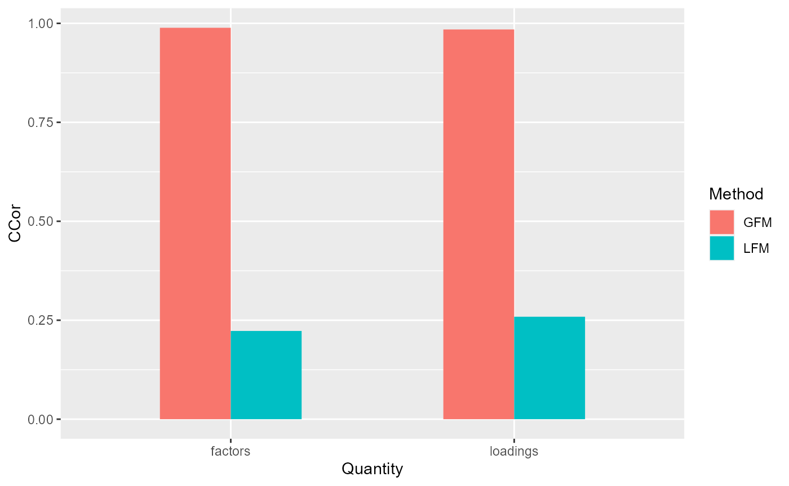
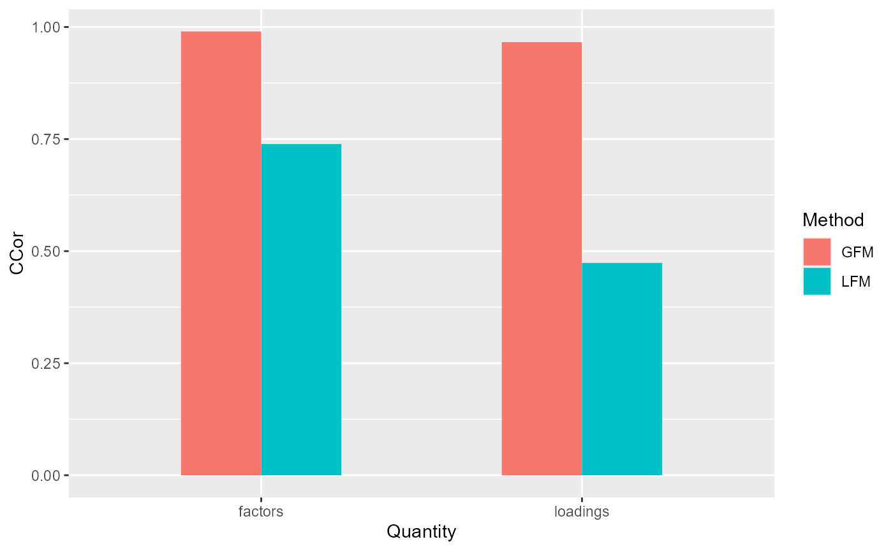

vignettes/GFM.SimuEM.Rmd
GFM.SimuEM.RmdIn this tutorial, we show that the variational EM in the overdispersed GFM (OverGFM) is used in the first step of the two-step estimation method and the singular value ratio method is adopted to choose the number of factors.
The package can be loaded with the command:
library("GFM")
#> Loading required package: doSNOW
#> Loading required package: foreach
#> Loading required package: iterators
#> Loading required package: snow
#> Loading required package: parallel
#>
#> Attaching package: 'parallel'
#> The following objects are masked from 'package:snow':
#>
#> clusterApply, clusterApplyLB, clusterCall, clusterEvalQ,
#> clusterExport, clusterMap, clusterSplit, makeCluster, parApply,
#> parCapply, parLapply, parRapply, parSapply, splitIndices,
#> stopCluster
#> GFM : Generalized factor model is implemented for ultra-high dimensional data with mixed-type variables.
#> Two algorithms, variational EM and alternate maximization, are designed to implement the generalized factor model,
#> respectively. The factor matrix and loading matrix together with the number of factors can be well estimated.
#> This model can be employed in social and behavioral sciences, economy and finance, and genomics,
#> to extract interpretable nonlinear factors. More details can be referred to
#> Wei Liu, Huazhen Lin, Shurong Zheng and Jin Liu. (2021) <doi:10.1080/01621459.2021.1999818>. Check out our Package website (https://feiyoung.github.io/GFM/docs/index.html) for a more complete description of the methods and analyses
set.seed(1) # set a random seed for reproducibility.First, we generate the data with homogeneous normal variables.
## Homogeneous normal variables
dat <- gendata(q = 2, n=100, p=100, rho=3)Then, we set the algorithm parameters and fit model
# Obtain the observed data
XList <- dat$XList # this is the data in the form of matrix list.
str(XList)
#> List of 1
#> $ : num [1:100, 1:100] -1.031 1.528 -0.565 1.288 -0.667 ...
#> ..- attr(*, "dimnames")=List of 2
#> .. ..$ : NULL
#> .. ..$ : NULL
X <- dat$X # this is the data in form of matrix
# set variables' type, 'gaussian' means there is continous variable type.
types <- 'gaussian' Third, we fit the GFM model with user-specified number of factors.
# specify q=2
gfm1 <- gfm(XList, types, algorithm="VEM", q=2, verbose = FALSE)
# measure the performance of GFM estimators in terms of canonical correlations
measurefun(gfm1$hH, dat$H0, type='ccor')
#> [1] 0.9924354
measurefun(gfm1$hB, dat$B0, type='ccor')
#> [1] 0.9933347The number of factors can also be determined by data-driven manners.
# select q automatically
hq <- chooseFacNumber(XList, types, select_method = "SVR", q_set = 1:6, verbose = FALSE)
#> The singular value ratio (SVR) method estimates the factor number q as 2.
hq
#> [1] 2First, we generate the data with heterogeous normal variables and set the parameters of algorithm.
dat <- gendata(seed=1, n=100, p=100, type='heternorm', q=2, rho=1)
# Obtain the observed data
XList <- dat$XList # this is the data in the form of matrix list.
str(XList)
#> List of 1
#> $ : num [1:100, 1:100] 0.7458 -2.006 1.705 0.0484 3.094 ...
#> ..- attr(*, "dimnames")=List of 2
#> .. ..$ : NULL
#> .. ..$ : NULL
X <- dat$X # this is the data in form of matrix
# set variables' type, 'gaussian' means there is continous variable type.
types <- 'gaussian' Third, we fit the GFM model with user-specified number of factors and compare the results with that of linear factor models.
# specify q=2
gfm1 <- gfm(XList, types, q=2, algorithm="VEM", verbose = FALSE)
# measure the performance of GFM estimators in terms of canonical correlations
corH_gfm <- measurefun(gfm1$hH, dat$H0, type='ccor')
corB_gfm <- measurefun(gfm1$hB, dat$B0, type='ccor')
lfm1 <- Factorm(X, q=2)
corH_lfm <- measurefun(lfm1$hH, dat$H0, type='ccor')
corB_lfm <- measurefun(lfm1$hB, dat$B0, type='ccor')
library(ggplot2)
#> Warning: package 'ggplot2' was built under R version 4.1.3
df1 <- data.frame(CCor= c(corH_gfm, corH_lfm, corB_gfm, corB_lfm),
Method =factor(rep(c('GFM', "LFM"), times=2)),
Quantity= factor(c(rep('factors',2), rep("loadings", 2))))
ggplot(data=df1, aes(x=Quantity, y=CCor, fill=Method)) + geom_bar(position = "dodge", stat="identity",width = 0.5)
The number of factors can also be determined by data-driven manners.
# select q automatically
hq <- chooseFacNumber(XList, types, select_method = "SVR", q_set = 1:6, verbose = FALSE)
#> The singular value ratio (SVR) method estimates the factor number q as 2.
hq
#> [1] 2First, we generate the data with Count(Poisson) variables and set the parameters of algorithm.
q <- 3; p <- 200
dat <- gendata(seed=1, n=200, p=p, type='pois', q=q, rho=4)
# Obtain the observed data
XList <- dat$XList # this is the data in the form of matrix list.
str(XList)
#> List of 1
#> $ : int [1:200, 1:200] 0 3 4 1 0 4 2 3 1 1 ...
X <- dat$X # this is the data in form of matrix
# set variables' type, 'gaussian' means there is continous variable type.
types <- 'poisson'Second, we we fit the GFM models given the true number of factors.
system.time(
gfm1 <- gfm(XList, types, algorithm="VEM", q=3, verbose = FALSE)
)
#> user system elapsed
#> 0.30 0.02 0.47Additionally, we demonstrate the two methods, singular value ratio (SVR) and information criterion (IC), to choose the number of factors, which suggests both methods can accurately chooose the number of factors, while SVR is much more efficient than the IC method that is even though implemented in parallel. Thus, we strongly recommand SVR, especially for high-dimensional large-scale data.
system.time(
hq <- chooseFacNumber(XList, types, select_method = "SVR", q_set = 1:6, verbose=FALSE)
)
#> The singular value ratio (SVR) method estimates the factor number q as 3.
#> user system elapsed
#> 0.23 0.02 0.47
system.time(
hq <- chooseFacNumber(XList, types, q_set=1:6, select_method = "IC", parallelList=list(parallel=TRUE))
)
#>
|
| | 0%
|
|============== | 20%
|
|============================ | 40%
|
|========================================== | 60%
|
|======================================================== | 80%
|
|======================================================================| 100%
#> IC criterion estimates the factor number q as 3.
#> user system elapsed
#> 0.00 0.00 15.65Third, we compare the results with that of linear factor models.
# measure the performance of GFM estimators in terms of canonical correlations
corH_gfm <- measurefun(gfm1$hH, dat$H0, type='ccor')
corB_gfm <- measurefun(gfm1$hB, dat$B0, type='ccor')
lfm1 <- Factorm(X, q=3)
corH_lfm <- measurefun(lfm1$hH, dat$H0, type='ccor')
corB_lfm <- measurefun(lfm1$hB, dat$B0, type='ccor')
library(ggplot2)
df1 <- data.frame(CCor= c(corH_gfm, corH_lfm, corB_gfm, corB_lfm),
Method =factor(rep(c('GFM', "LFM"), times=2)),
Quantity= factor(c(rep('factors',2), rep("loadings", 2))))
ggplot(data=df1, aes(x=Quantity, y=CCor, fill=Method)) + geom_bar(position = "dodge", stat="identity",width = 0.5)
First, we generate the data with Count(Poisson) variables and set the parameters of algorithm. Then fit the GFM model with user-specified number of factors.
dat <- gendata(seed=1, n=200, p=200, type='pois_bino', q=2, rho=2)
# Obtain the observed data
XList <- dat$XList # this is the data in the form of matrix list.
str(XList)
#> List of 2
#> $ : int [1:200, 1:100] 2 0 3 5 1 1 1 5 1 0 ...
#> $ : int [1:200, 1:100] 1 0 1 1 0 0 1 0 0 0 ...
X <- dat$X # this is the data in form of matrix
# set variables' type, 'gaussian' means there is continous variable type.
types <- dat$types
table(dat$X[,1])
#>
#> 0 1 2 3 4 5 6 8 11
#> 52 61 34 26 14 8 3 1 1
table(dat$X[, 200])
#>
#> 0 1
#> 108 92
# user-specified q=2
gfm2 <- gfm(XList, types, algorithm="VEM", q=2, verbose = FALSE)
measurefun(gfm2$hH, dat$H0, type='ccor')
#> [1] 0.9899831
measurefun(gfm2$hB, dat$B0, type='ccor')
#> [1] 0.9661972Third, we compare the results with that of linear factor models.
# select q automatically
hq <- chooseFacNumber(XList, types, select_method = "SVR",)
#> Starting the two-step method with varitional EM in the first step...
#> iter = 2, ELBO= -34152.514287, dELBO=1.000000
#> iter = 3, ELBO= -33103.022806, dELBO=0.030730
#> iter = 4, ELBO= -32570.324615, dELBO=0.016092
#> iter = 5, ELBO= -32276.929542, dELBO=0.009008
#> iter = 6, ELBO= -32123.234942, dELBO=0.004762
#> iter = 7, ELBO= -32048.338820, dELBO=0.002332
#> iter = 8, ELBO= -32018.865894, dELBO=0.000920
#> iter = 9, ELBO= -32015.664068, dELBO=0.000100
#> Finish the two-step method
#> The singular value ratio (SVR) method estimates the factor number q as 2.
# measure the performance of GFM estimators in terms of canonical correlations
corH_gfm <- measurefun(gfm2$hH, dat$H0, type='ccor')
corB_gfm <- measurefun(gfm2$hB, dat$B0, type='ccor')
Compare with linear factor models
lfm1 <- Factorm(dat$X, q=3)
corH_lfm <- measurefun(lfm1$hH, dat$H0, type='ccor')
corB_lfm <- measurefun(lfm1$hB, dat$B0, type='ccor')
library(ggplot2)
df1 <- data.frame(CCor= c(corH_gfm, corH_lfm, corB_gfm, corB_lfm),
Method =factor(rep(c('GFM', "LFM"), times=2)),
Quantity= factor(c(rep('factors',2), rep("loadings", 2))))
ggplot(data=df1, aes(x=Quantity, y=CCor, fill=Method)) + geom_bar(position = "dodge", stat="identity",width = 0.5)
sessionInfo()
#> R version 4.1.2 (2021-11-01)
#> Platform: x86_64-w64-mingw32/x64 (64-bit)
#> Running under: Windows 10 x64 (build 22621)
#>
#> Matrix products: default
#>
#> locale:
#> [1] LC_COLLATE=Chinese (Simplified)_China.936
#> [2] LC_CTYPE=Chinese (Simplified)_China.936
#> [3] LC_MONETARY=Chinese (Simplified)_China.936
#> [4] LC_NUMERIC=C
#> [5] LC_TIME=Chinese (Simplified)_China.936
#>
#> attached base packages:
#> [1] parallel stats graphics grDevices utils datasets methods
#> [8] base
#>
#> other attached packages:
#> [1] ggplot2_3.4.1 GFM_1.2.1 doSNOW_1.0.20 snow_0.4-4
#> [5] iterators_1.0.14 foreach_1.5.2
#>
#> loaded via a namespace (and not attached):
#> [1] tidyselect_1.1.2 xfun_0.29 bslib_0.3.1 purrr_0.3.4
#> [5] lattice_0.20-45 generics_0.1.2 colorspace_2.1-0 vctrs_0.6.1
#> [9] htmltools_0.5.2 yaml_2.3.6 utf8_1.2.3 rlang_1.1.0
#> [13] pkgdown_2.0.6 jquerylib_0.1.4 pillar_1.9.0 withr_2.5.0
#> [17] DBI_1.1.2 glue_1.6.2 lifecycle_1.0.3 stringr_1.4.0
#> [21] munsell_0.5.0 gtable_0.3.3 ragg_1.2.2 codetools_0.2-18
#> [25] memoise_2.0.1 evaluate_0.15 labeling_0.4.2 knitr_1.37
#> [29] fastmap_1.1.0 irlba_2.3.5 fansi_1.0.4 highr_0.9
#> [33] Rcpp_1.0.10 scales_1.2.1 cachem_1.0.6 desc_1.4.0
#> [37] jsonlite_1.8.0 farver_2.1.1 systemfonts_1.0.4 fs_1.5.2
#> [41] textshaping_0.3.6 digest_0.6.29 stringi_1.7.6 dplyr_1.0.9
#> [45] rprojroot_2.0.3 grid_4.1.2 cli_3.2.0 tools_4.1.2
#> [49] magrittr_2.0.3 sass_0.4.1 tibble_3.2.1 crayon_1.5.1
#> [53] pkgconfig_2.0.3 MASS_7.3-55 Matrix_1.4-0 assertthat_0.2.1
#> [57] rmarkdown_2.11 rstudioapi_0.13 R6_2.5.1 compiler_4.1.2